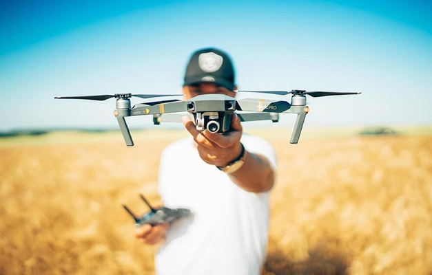
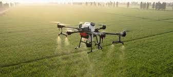

Bem-vindo ao nosso site informativo, onde mergulhamos nas transformações da agricultura moderna. Aqui, exploramos como inovações tecnológicas estão moldando o campo, desde práticas sustentáveis até avanços em cultivos de precisão. Descubra conosco como estas mudanças não só aumentam a eficiência, mas também promovem uma agricultura mais responsável e adaptada aos desafios contemporâneos. Junte-se a nós nessa jornada de descoberta e aprendizado sobre o futuro da agricultura.
A tecnologia está transformando a agricultura e capturando a atenção dos jovens de maneira inédita. O advento de drones, inteligência artificial e sensores de precisão está revolucionando como cultivamos alimentos. Para os jovens, isso não apenas representa oportunidades de carreira inovadoras, mas também uma chance de impactar positivamente o mundo através da sustentabilidade e eficiência. Combinando paixão pela tecnologia com o desejo de enfrentar desafios globais como segurança alimentar e mudanças climáticas, os jovens estão encontrando na agricultura tecnológica um campo fértil para suas aspirações e ideais.
Na vanguarda da agricultura moderna, novas tecnologias estão redefinindo o setor de maneiras emocionantes. Drones equipados com câmeras de alta resolução sobrevoam campos, proporcionando imagens detalhadas que ajudam os agricultores a monitorar o crescimento das culturas e detectar problemas precocemente. Sensores de solo e clima fornecem dados em tempo real, permitindo ajustes precisos na irrigação e na aplicação de fertilizantes. Além disso, a inteligência artificial está sendo aplicada para prever safras, otimizar o uso de recursos e até mesmo para desenvolver culturas mais resistentes e nutritivas. Essas tecnologias não apenas aumentam a eficiência e reduzem os custos, mas também abrem novas fronteiras de sustentabilidade e inovação no campo agrícola.
Entre em contato conosco pelo email: gabriel.muller.ribeiro@escola.pr.gov.br